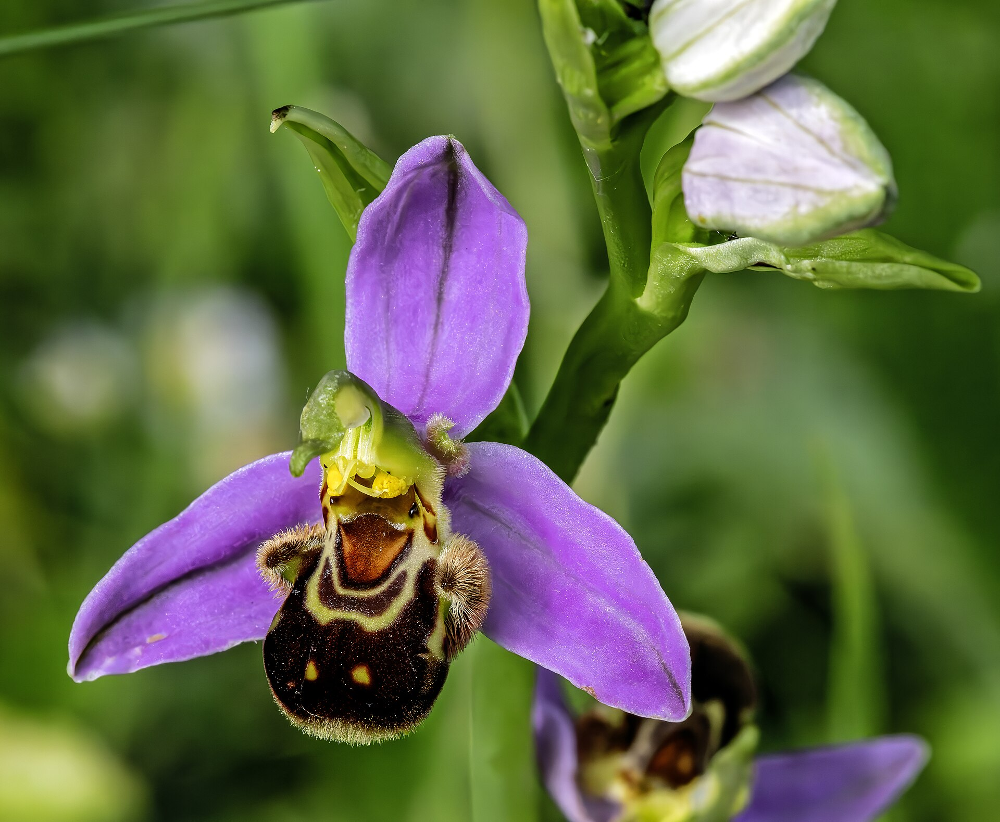

La flor imita a una abeja hembra y produce aromas que atraen a los machos para facilitar la polinización.
Es una orquídea terrestre. Sus flores combinan señales visuales y químicas para atraer insectos polinizadores.
Según la información de esta especie, se encuentra en bosques de niebla, zonas montañosas húmedas y ambientes tropicales.
¿Cómo atrae a los polinizadores?
Su flor recuerda el cuerpo de una abeja hembra. Además, libera sustancias químicas con un olor parecido al de sus feromonas, atrayendo a los machos.
Sentidos
